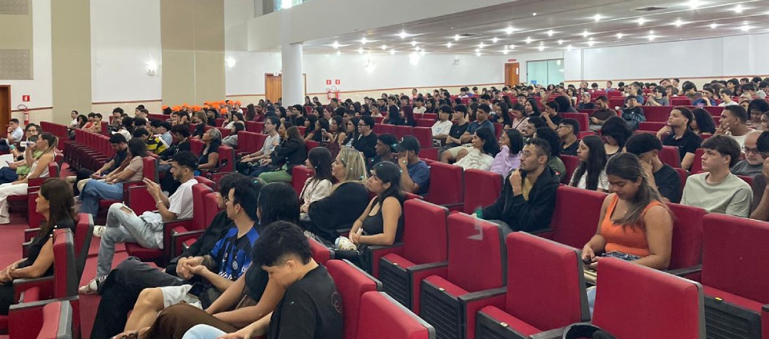
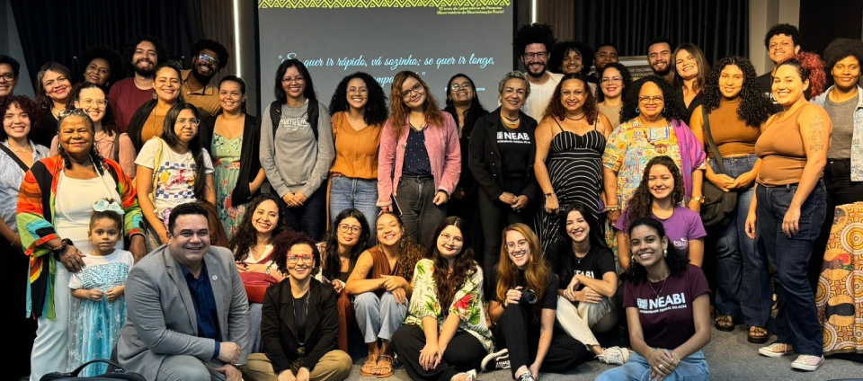

Portal da Ufac
Últimas notícias
Ufac celebra desempenho após divulgação dos resultados do Enade 2025

Ufac realiza recepção institucional para novos estudantes no Teatro Universitário

Ufac celebra trajetória de dez anos do Laboratório de Discriminação Racial